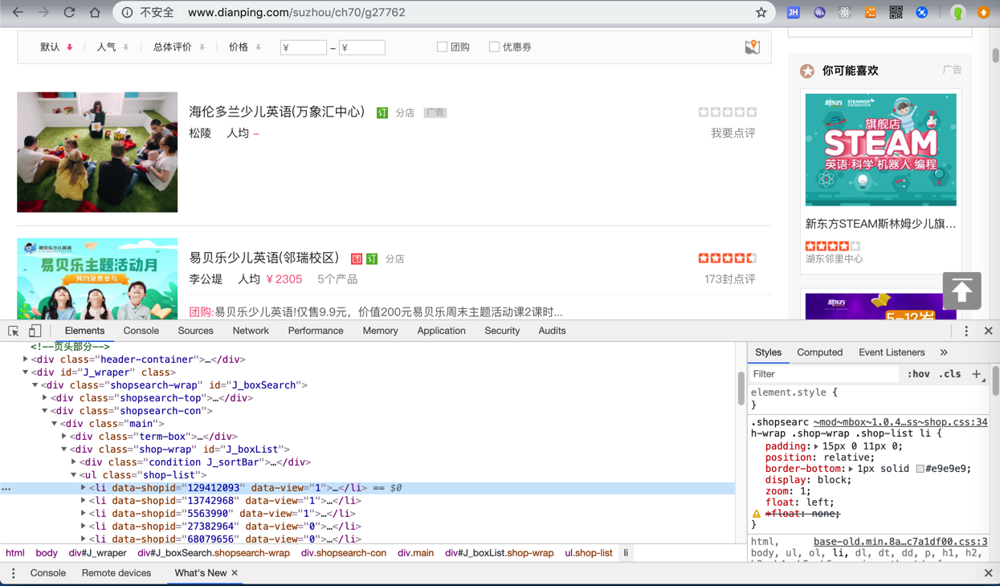
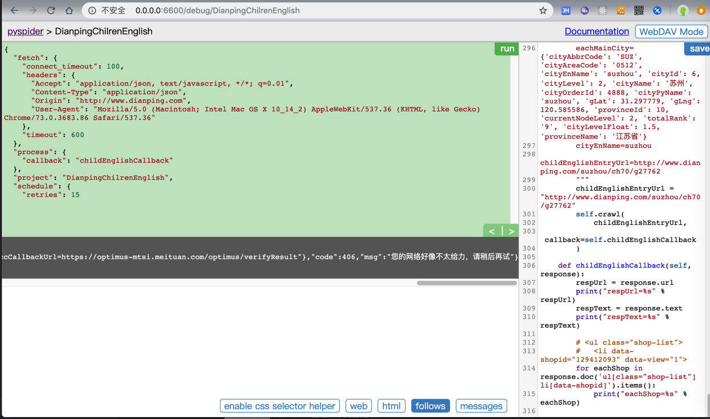
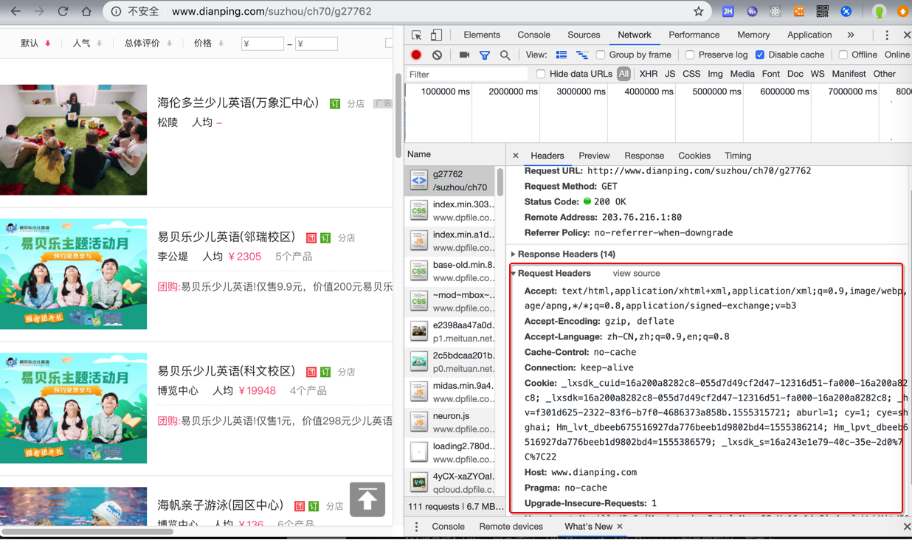
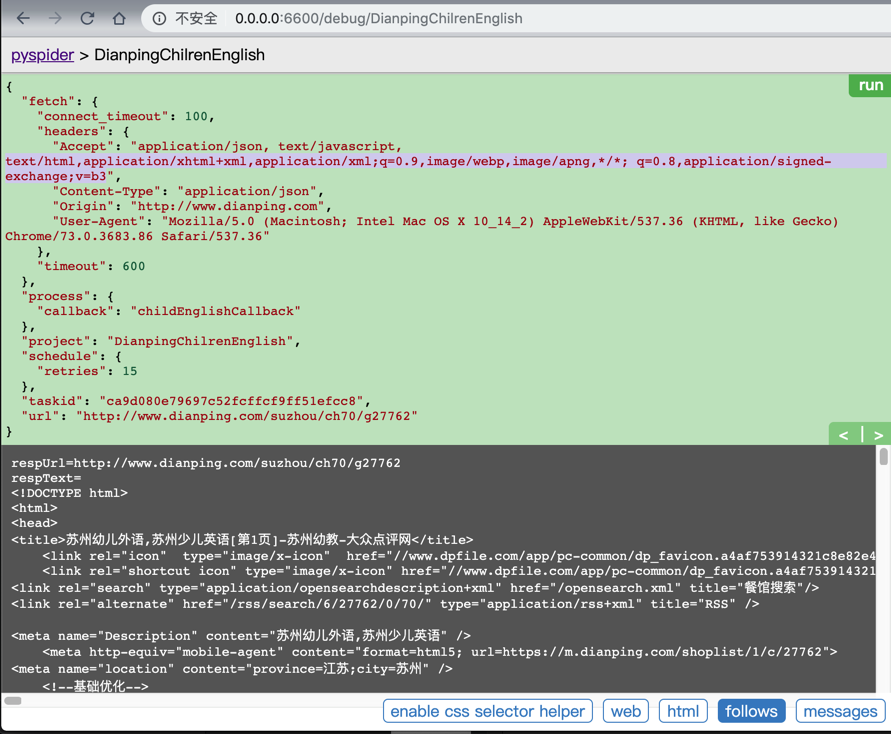

动态网页
- 动态网页
- 是相对于
静态网页来说的 - 指的是，通过爬虫抓取代码得到的源码，往往只是（用户通过浏览器看到的全部内容的）其中一部分
- 剩下的内容，需要动态加载
- 往往需要我们额外再发出请求获取对应内容
- 前提是需要调试分析网页内容加载的逻辑
- 往往需要我们额外再发出请求获取对应内容
- 剩下的内容，需要动态加载
- 是相对于
相关内容：
【教程】手把手教你如何利用工具(IE9的F12)去分析模拟登陆网站(百度首页)的内部逻辑过程
【教程】以抓取网易博客帖子中的最近读者信息为例，手把手教你如何抓取动态网页中的内容
TODO：
找个，需要登录的网站，或者是是网页内容需要后续执行js才能加载的例子，再去用抓包工具模拟登录，或分析数据是如何加载的。
举例：Chrome分析大众点评某页面获取店铺数据后用PySpider实现代码并下载数据
此次通过举例来说明，如何：
- 用Chrome分析逻辑后
- 再去（PySpider的）代码实现
期间要注意的是：要一点点模拟各种参数，才能获取到数据，否则会出现各种错误
要分析的网址：
http://www.dianping.com/suzhou/ch70/g27762
用Chrome打开后，是可以获取到数据的：

但是PySpider中，用代码：
#!/usr/bin/env python
# -*- encoding: utf-8 -*-
# Created on 2019-04-15 14:56:12
# Project: DianpingChilrenEnglish
from pyspider.libs.base_handler import *
import os
import json
import codecs
import base64
import gzip
import copy
import time
import re
import csv
# import datetime
from datetime import datetime, timedelta
######################################################################
# Const
######################################################################
...
constCityListNamePattern = "cityList_%s_%s.json"
constMainCityFilename = "mainCityWithLevelList.json"
constUserAgentMacChrome = "Mozilla/5.0 (Macintosh; Intel Mac OS X 10_14_2) AppleWebKit/537.36 (KHTML, like Gecko) Chrome/73.0.3683.86 Safari/537.36"
gHost = "http://www.dianping.com"
CategoryLevel1ParentChild = "ch70" # 全部分类->亲子
CategoryLevel2ChildEnglish = "g27762" # 幼儿教育 -> 幼儿外语
######################################################################
# Project Specific Functions
######################################################################
######################################################################
# Main
######################################################################
class Handler(BaseHandler):
crawl_config = {
"connect_timeout": 100,
"timeout": 600,
"retries": 15,
"headers": {
"User-Agent": constUserAgentMacChrome,
"Accept": "application/json, text/javascript, */*; q=0.01",
"Content-Type": "application/json",
"Origin": "http://www.dianping.com",
# "X-Requested-With": "XMLHttpRequest",
}
}
def on_start(self):
# self.init()
self.realStart()
def realStart(self):
...
# for debug
"""
eachMainCity={'cityAbbrCode': 'SUZ', 'cityAreaCode': '0512', 'cityEnName': 'suzhou', 'cityId': 6, 'cityLevel': 2, 'cityName': '苏州', 'cityOrderId': 4888, 'cityPyName': 'suzhou', 'gLat': 31.297779, 'gLng': 120.585586, 'provinceId': 10, 'currentNodeLevel': 2, 'totalRank': '9', 'cityLevelFloat': 1.5, 'provinceName': '江苏省'}
cityEnName=suzhou
childEnglishEntryUrl=http://www.dianping.com/suzhou/ch70/g27762
"""
childEnglishEntryUrl = "http://www.dianping.com/suzhou/ch70/g27762"
self.crawl(
childEnglishEntryUrl,
callback=self.childEnglishCallback
)
def childEnglishCallback(self, response):
respUrl = response.url
print("respUrl=%s" % respUrl)
respText = response.text
print("respText=%s" % respText)
# <ul class="shop-list">
# <li data-shopid="129412093" data-view="1">
for eachShop in response.doc('ul[class="shop-list"] li[data-shopid]').items():
print("eachShop=%s" % eachShop)
结果返回错误信息：
respText={"customData":{"requestCode":"c9847c945a1440d49460df748b757250","verifyUrl":"https://optimus-mtsi.meituan.com/optimus/verify?request_code=c9847c945a1440d49460df748b757250","imageUrl":"https://verify.meituan.com/v2/captcha?action=spiderindefence&request_code=c9847c945a1440d49460df748b757250","verifyPageUrl":"https://verify.meituan.com/v2/app/general_page?action=spiderindefence&requestCode=c9847c945a1440d49460df748b757250&platform=1000&adaptor=auto&succCallbackUrl=https://optimus-mtsi.meituan.com/optimus/verifyResult"},"code":406,"msg":"您的网络好像不太给力，请稍后再试"}

然后去参考Chromet中看到的参数：

对于各种header，想办法一个个加上去试试，最终发现是：
给Accept加上text/html相关类型：
# "Accept": "application/json, text/javascript, */*; q=0.01",
"Accept": "application/json, text/javascript, text/html,application/xhtml+xml,application/xml;q=0.9,image/webp,image/apng,*/*; q=0.8,application/signed-exchange;v=b3",
就可以获取到数据了：

-》还是之前提到的哪个逻辑：想办法参考Chrome调试看到的所有的重要参数：
url中的query stringheader中有价值的部分- 甚至相关的
cookie，session，localStorage等内容
都加上后，多数情况下，就可以获取到对应的返回的数据了。